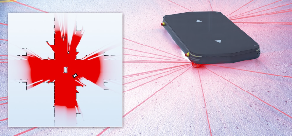

Level 2: Native ROS 2 SLAM¶
 Reliable localization is essential for autonomous driving, driverless-vehicle
navigation, and a smooth material flow. High-resolution LiDAR measurements
help map the surroundings. Localization software compares measurements with
the map to estimate the vehicle's position and orientation, also called its
pose. Accuracy depends on the environment, sensor setup, and software
configuration.
Reliable localization is essential for autonomous driving, driverless-vehicle
navigation, and a smooth material flow. High-resolution LiDAR measurements
help map the surroundings. Localization software compares measurements with
the map to estimate the vehicle's position and orientation, also called its
pose. Accuracy depends on the environment, sensor setup, and software
configuration.

Illustration of LiDAR mapping and localization with a mobile robot, occupancy map, and pose estimate.
ROS 2 for Beginners¶
For the simplest setup, run this example on an Ubuntu system supported by your ROS 2 distribution. ROS 2, SLAM Toolbox, and RViz are readily available as packages on supported Ubuntu releases. Match the Ubuntu version to the ROS 2 distribution's installation requirements.
ROS 2 is a software framework for connecting robot components. It is not a complete robot application: you combine programs called nodes to handle tasks such as receiving sensor data, estimating position, and driving motors. Nodes exchange messages over named topics.
For this example, a LiDAR integration publishes scan measurements. Mapping or localization software consumes those measurements together with robot motion information. Coordinate transforms (TF) describe how the sensor, robot, and map are positioned relative to one another.
Mapping, Localization, and Navigation¶
Mapping, Localization, and Navigation: task and what it does.
| Task | What it does |
|---|---|
| SLAM | Simultaneous localization and mapping: builds a map while estimating the robot's pose. |
| Localization | Estimates the robot's pose within an existing map. |
| Navigation | Uses the pose and a destination to plan and follow a route while considering obstacles. |
This example only builds a map and estimates the vehicle's pose within it. Use SLAM Toolbox for both stages: first run mapping, then load the saved pose graph in localization mode. A navigation stack, route planner, and motion controller are not required for this example.
Suggested Data Path¶
The typical data path is:
LiDAR LaserScan → scan-matching odometry + TF → SLAM Toolbox → map-relative pose in RViz
This example uses LiDAR scan matching to estimate movement, without wheel
encoders. Run a separate scan-matching odometry node alongside SLAM Toolbox;
excluding encoders does not remove SLAM Toolbox's odometry requirement.
Provide a suitable LaserScan topic to both nodes.
Example Solution¶
LiDAR mapping and localization example with ROS 2 and SLAM Toolbox.
Project Prompt¶
Expand to view the project prompt
Help me with a beginner-friendly ROS 2 handheld mapping
project, primarily on Linux, with Windows supported where feasible. Ask for
my OS/version and ROS distribution first. A reference implementation was tested
on Kilted, but do not require migration from a compatible working installation.
Assume I am starting from scratch without an existing repository, configuration,
dependency patches or helper scripts. Prefer compatible ROS binary packages on
Linux; build from source only when necessary. Record dependency versions or
pinned commits and preserve any required patches. Keep the architecture
OS-neutral and clearly label platform-specific install, build and activation
commands. Create any required launch files, configuration, tests and helper
scripts, and explain where to put them.
A SICK picoScan150 publishes native ROS 2 (DDS) LaserScan directly; do not add
a host-side SICK driver. I move the scanner by hand without wheel odometry.
Use RF2O scan odometry, SLAM Toolbox mapping and RViz to show live scans, a
growing occupancy map and the moving sensor pose. Use
https://sickag.github.io/sick_lidar_developer_guide/ for integration facts.
Verify firmware and license, Cyclone DDS, network interface,
discovery/domain, actual full single-echo LaserScan topic, QoS, frame,
angular geometry and acquisition timestamps. Discover values rather than
inventing settings or reusing another sensor's topic/frame blindly.
Preserve native scan timestamps. For standalone handheld mapping, publish
acquisition time on /handheld/clock, remap /clock and use_sim_time consistently
in RF2O, SLAM and RViz. Isolate motion TF on /handheld/tf and
/handheld/tf_static; exclude the sensor's identity world transform. Use the
observed laser frame as the handheld base, without an invented mounting TF.
RF2O owns handheld_odom -> laser; SLAM owns map -> handheld_odom. This
dedicated clock does not synchronize hardware clocks: do not connect robot
odometry, other sensors or Nav2 without verifying real clock alignment.
Verify RF2O handles asymmetric angular coverage, a valid initial quaternion,
invalid ranges, identical stationary scans, stable startup geometry and
strictly increasing timestamps. Reject incompatible geometry and report
failed matches instead of publishing stale poses. Verify SLAM accepts
translation OR in-place rotation with correct angle units. On Windows,
verify binary-mode pose-graph serialization and required native build fixes.
Check the installed versions before applying patches; do not duplicate fixes
already present upstream.
Deliver working launch/configuration and reproducible setup, not only proposed
commands. Automate SLAM lifecycle activation, prevent duplicate mapping
sessions and shut down if a critical process exits.
Explain environment activation, startup, Ctrl+C shutdown,
fresh-map restart, graph save and reload. Preserve both .posegraph and .data;
distinguish saved-pose-graph SLAM Toolbox localization from occupancy-grid
AMCL. Do not assume archive compatibility across versions or platforms.
Was this page helpful?